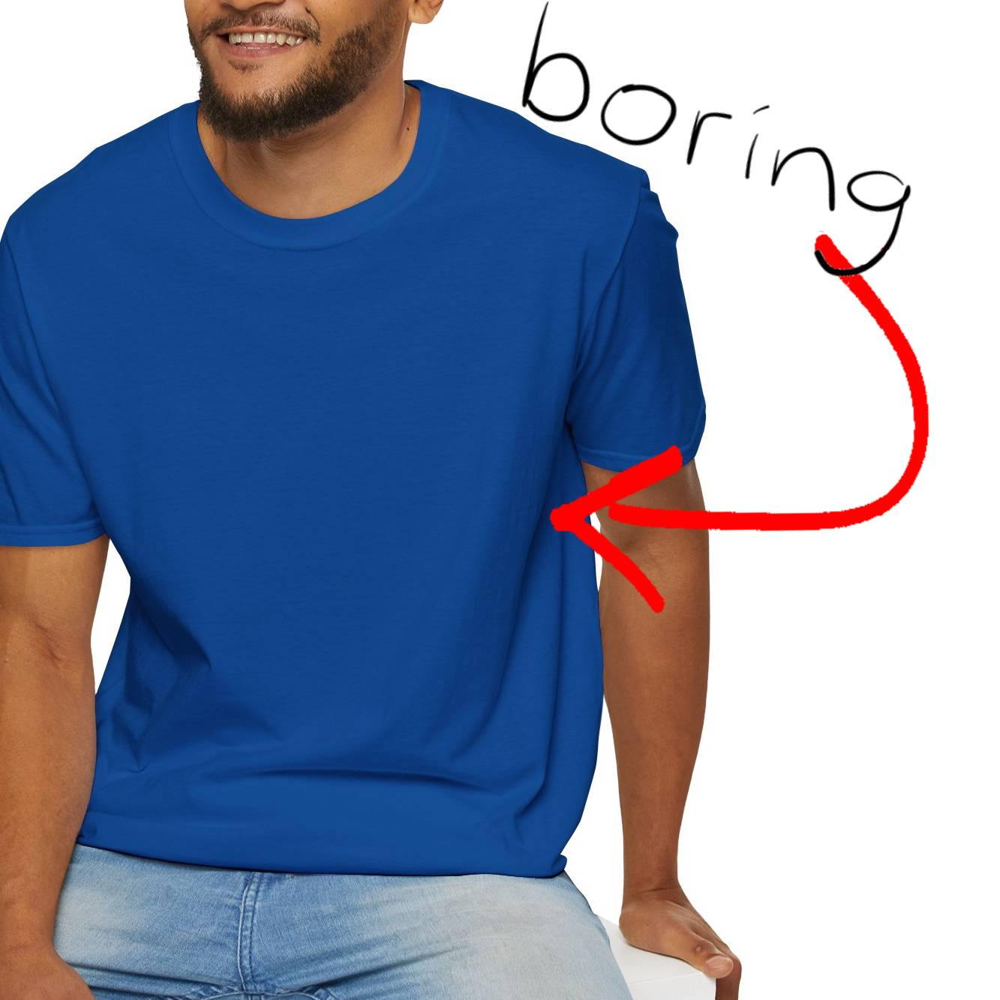
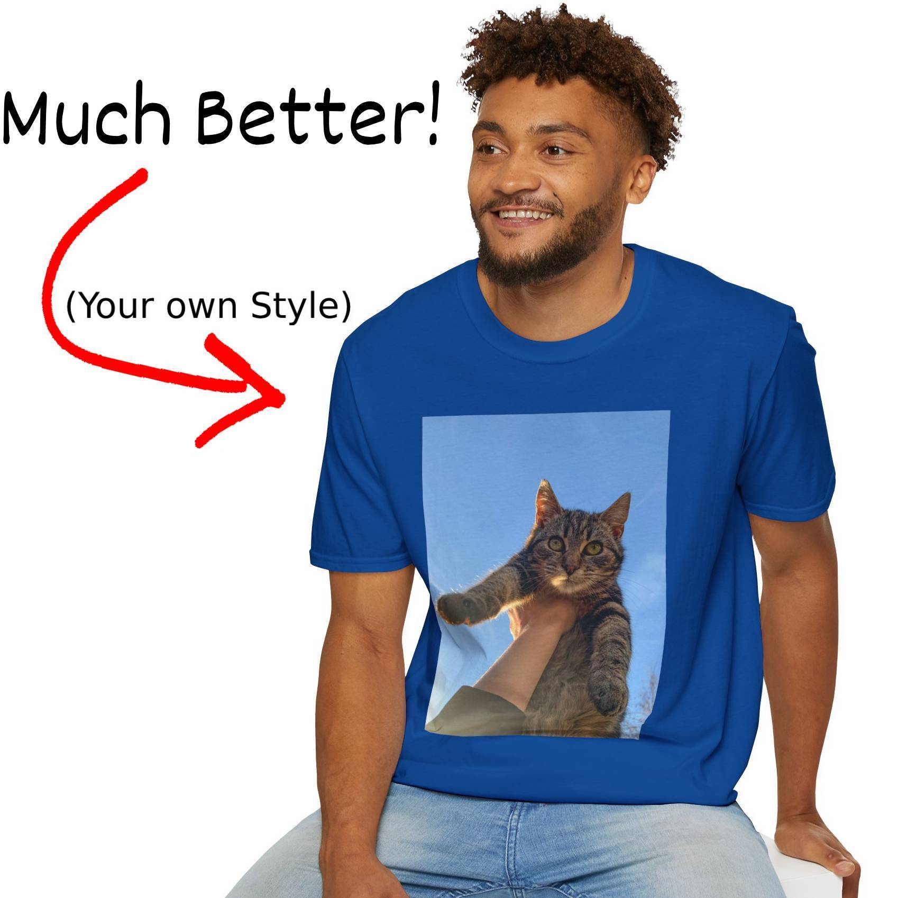
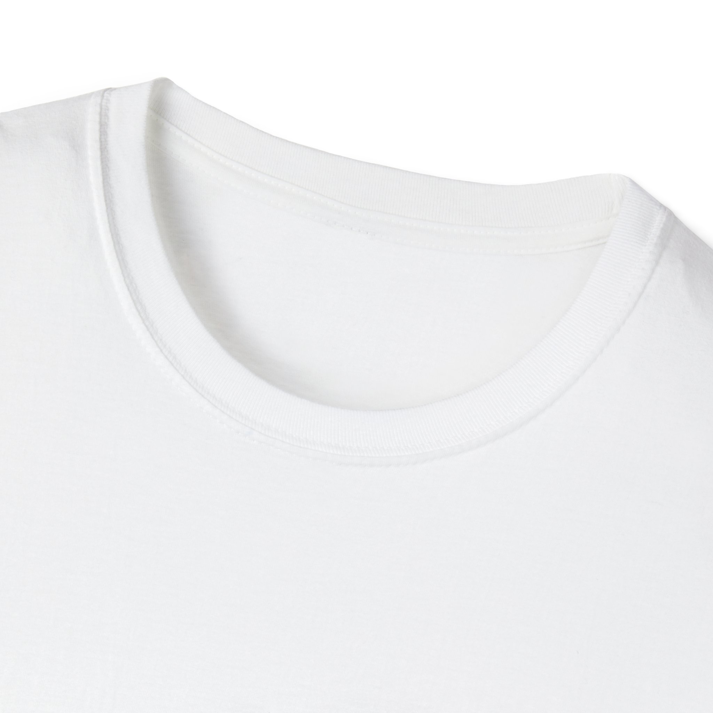
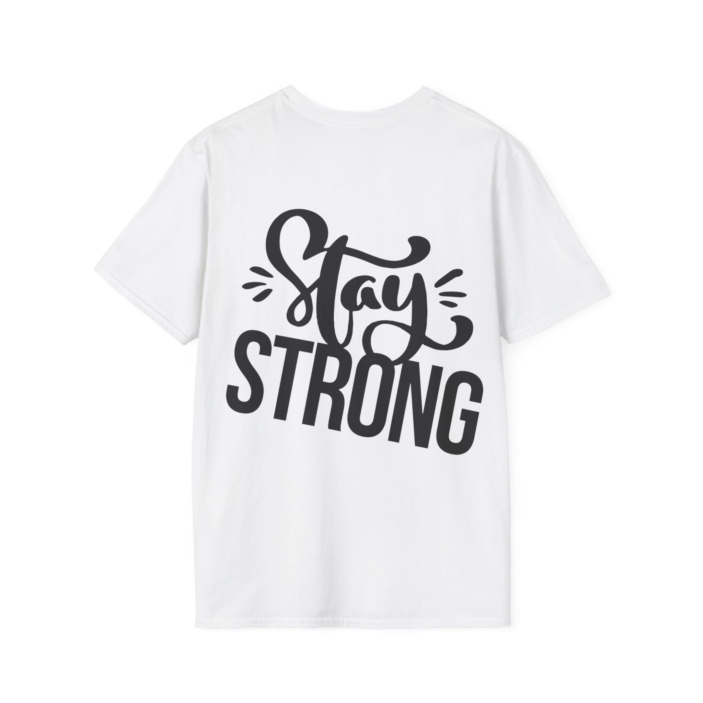

1/
The unisex soft-style t-shirt puts a new spin on casual comfort. Made from very soft materials, this tee is 100% cotton for solid colors. Heather colors and sports grey include polyester. The shoulders have twill tape for improved durability. There are no side seams. The collar is made with ribbed knitting to prevent curling damage.
| Size |
A Width, in
|
B Length, in
|
C Sleeve, in
|
|---|---|---|---|
| Size |
A Width, cm
|
B Length, cm
|
C Sleeve, cm
|
Do not dryclean; Machine wash: warm (max 40C or 105F); Do not bleach; Tumble dry: low heat; Iron, steam or dry: low heat.